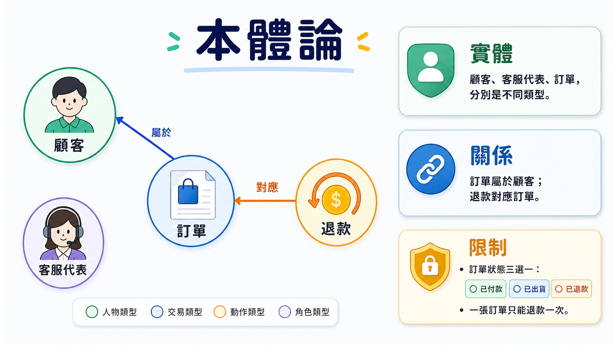
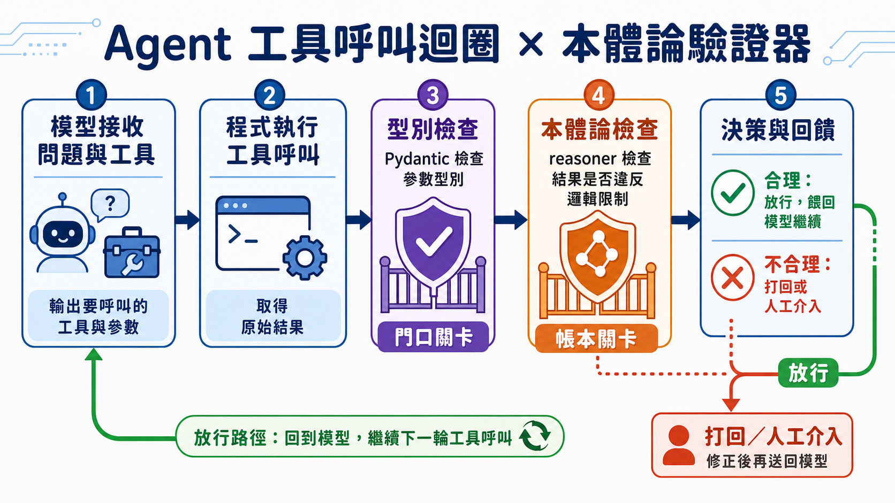

同一張訂單，退款被核准了兩次。一筆本該轉給買家的款項，被系統誤送進了客服人員自己的帳戶。訂單狀態欄位上寫著「大概出貨了」——一個系統裡根本不該存在的字串。
這些不是駭客攻擊，也不是資料庫故障。它們是一個接了工具、能自主決策的 AI agent，在一連串看似合理的推論後，做出的正常輸出。而且無論你把系統提示詞寫得多細、把「請勿重複退款」這句話加粗幾次、放在提示詞的第幾行，這類錯誤還是會發生。
為什麼「寫清楚一點」救不了你
問題出在一個常被忽略的事實：大型語言模型的本質是機率模型。它不是在「檢查規則」，而是在「猜下一個最可能出現的詞」。這件事本身不是缺陷，而是它之所以能對話、能寫程式、能處理你從沒教過的情境的原因——它在用近似的方式，對一個自己只理解一半的領域做推論。
於是你能想像的每一種修補方式，本質上都在跟這個機率性正面對撞。你在提示詞裡寫「訂單狀態只能是已付款、已出貨、已退款其中之一」，模型多數時候會遵守，但「多數時候」在一個要處理成千上萬筆訂單的系統裡，就等於「一定會有例外」。你寫「客服人員和買家是不同身份，退款必須付給買家」，模型還是可能在某次推論鏈裡把兩者的關係搞混，因為對它而言，這只是機率分布裡另一種同樣「聽起來合理」的排列組合。
你沒辦法用一段更長、更嚴謹的英文，去堵住一個本質上是統計採樣過程的漏洞。這不是提示工程能力不夠的問題，是提示工程這個工具本身，管不到這一層。
把邏輯挪到模型外面
如果機率模型內部管不住規則，答案並不是放棄規則，而是把規則搬到模型外面——用一個獨立於模型、不會「機率性地」出錯的系統，去檢查模型每一次的輸出與行動。這正是「神經符號 AI」（neurosymbolic AI）想解決的問題：機率推論留在裡面，邏輯約束擺在外面。
而外面這層邏輯約束，說穿了就是一份「本體論」（ontology）。這個詞聽起來像哲學系的作業，但拆開來看，它其實只是三件很直白的事：
- 有型別的實體——顧客是顧客，客服代表是客服代表，兩者不能互換
- 實體之間的關係——一張訂單屬於一位顧客，一次退款對應一張訂單
- 限制條件——訂單狀態只能是已付款、已出貨、或已退款這三選一；一張訂單只能被退款一次

這些內容可以用 RDFS、OWL 這類已經存在數十年、毫不時髦的標準來表達。你不需要為每個專案重新發明一套本體論——像 schema.org、Dublin Core 這類公開分類法，已經把「顧客」「訂單」「文章作者」這些常見概念整理好了，甚至連維基百科的搜尋機制底層都是靠一套叫 DBpedia 的本體論在運作。這代表你多數時候是在挑選和組裝既有積木，而不是從零開始畫一張全新的世界地圖。
邏輯層真正在做的事：推論與否決
一份本體論不只是「幫你分類」的說明文件，它還能主動做兩件事：幫你推論出沒明說的事實，以及在有人試圖說出矛盾的話時，直接否決掉。
推論的部分靠的是 RDFS 裡的 domain（定義域）和 range（值域）。如果系統知道「教學」這個關係的定義域是「老師」，那麼一旦文字裡出現「某人教某課」，系統立刻能推出「這個人是老師」——不需要另外去查一張「誰是老師」的清單，關係本身就帶出了身份。同樣地，OWL 提供的遞移性質可以讓「甲是乙的祖先，乙是丙的祖先」自動推出「甲是丙的祖先」；函數性質則規定像「生父」這種關係只能對應一個值——如果系統裡同時出現兩個不同名字都被標記為同一人的生父，那就代表這兩個名字其實是同一個人的兩種寫法，系統可以直接把這個矛盾標記出來。
否決的部分，才是真正對應到退款兩次、款項發錯人這類事故的機制。「訂單只能被退款一次」是一條限制；「顧客和客服代表是互斥的兩種實體」是另一條——這意味著一旦有工具呼叫試圖把退款金額打到一個被標記為「客服代表」的帳號，這條規則本身就會擋下這次行動，理由不是「這聽起來很奇怪」，而是「這在邏輯上不成立」。這正是本體論和單純寫在提示詞裡的一句話最大的差異：提示詞裡的規則是說給一個機率模型聽的建議，本體論裡的規則是一個獨立系統會主動檢查、主動否決的斷言。
把它接進一個真正在跑的 agent 迴圈裡
這套機制怎麼落地到一個實際呼叫工具的 agent 迴圈裡？核心結構其實還是那個大家已經很熟悉的 while 迴圈：模型收到一個問題和一組可用工具，由於模型本身不能真正執行任何動作——它能做的，永遠只是「算出下一個最高機率的詞」——它只能把自己認為該呼叫的工具、該填入的參數，整理成一份結構化的回應交出來。程式檢查這次回應的 stop reason，如果原因是「要用工具」，就去實際執行那個工具呼叫，拿到結果之後，再把結果餵回模型，讓對話繼續。
多數 agent 教學到這裡就結束了，而問題也正好出在這裡：迴圈本身沒有能力判斷「工具真的執行對了嗎」「這個結果合理嗎」。迴圈可能會偏移，agent 之間互相對話幾輪之後開始講不知所云的內容；迴圈也可能無限跑下去，每多繞一圈，你的 token 帳單就往上跳一次。

本體論要接的位置，正是在工具執行完、結果要被拿去餵回模型或觸發下一步動作之前。工具的原始輸出先被整理成本體論看得懂的形式，交給一個依附在本體論之上的驗證器（reasoner）去檢查：這次的狀態變更、這次的金額歸屬，是否違反了已知的限制。合理就放行，不合理就打回去讓模型重新處理，或是直接叫人進來看。而在進到這層檢查之前，還有一道更前面的關卡——用 Pydantic 這類工具檢查參數的型別對不對，畢竟 Python 本身是弱型別語言，一個變數前一秒是數字，下一秒被指定成字串也不會報錯。型別檢查負責把「格式對不對」擋在門口，本體論負責把「邏輯合不合理」擋在帳本前。門口管型別，帳本管邏輯，兩層各司其職。
這層邏輯救回來的，不是精確度，是可信度
把這套流程放回開頭那三個事故重新看一次：退款兩次，被一條「訂單只能退款一次」的限制擋下；款項打去客服帳戶，被「顧客與客服代表互斥」這條規則否決；「大概出貨了」這個值，連進系統的資格都沒有，因為狀態欄位本來就只允許三個合法值中的一個。這三個原本要花大量篇幅、還不見得寫得完備的英文說明，在本體論裡各自只是幾行邏輯宣告。
這也點出一個容易被誤解的地方：引入本體論，不是要讓 agent 變得「更聰明」，而是幫它畫出一條它自己畫不出來的邊界。機率模型的強項是處理它從沒見過的情境，這也正是它沒辦法保證「絕對不做某件事」的原因——保證絕對不做某件事，本質上是一個邏輯陳述，而邏輯陳述，從來就不該指望一個機率系統靠「理解」去自我約束。把這部分工作還給邏輯系統去做，才是讓一個會犯錯的機率模型，能被放進真正處理錢、處理訂單的系統裡的前提。